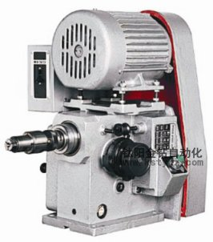
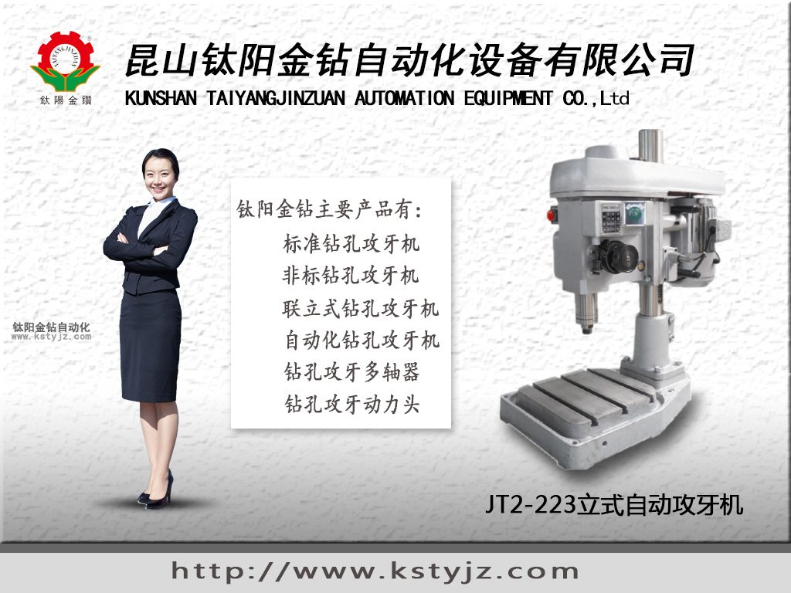
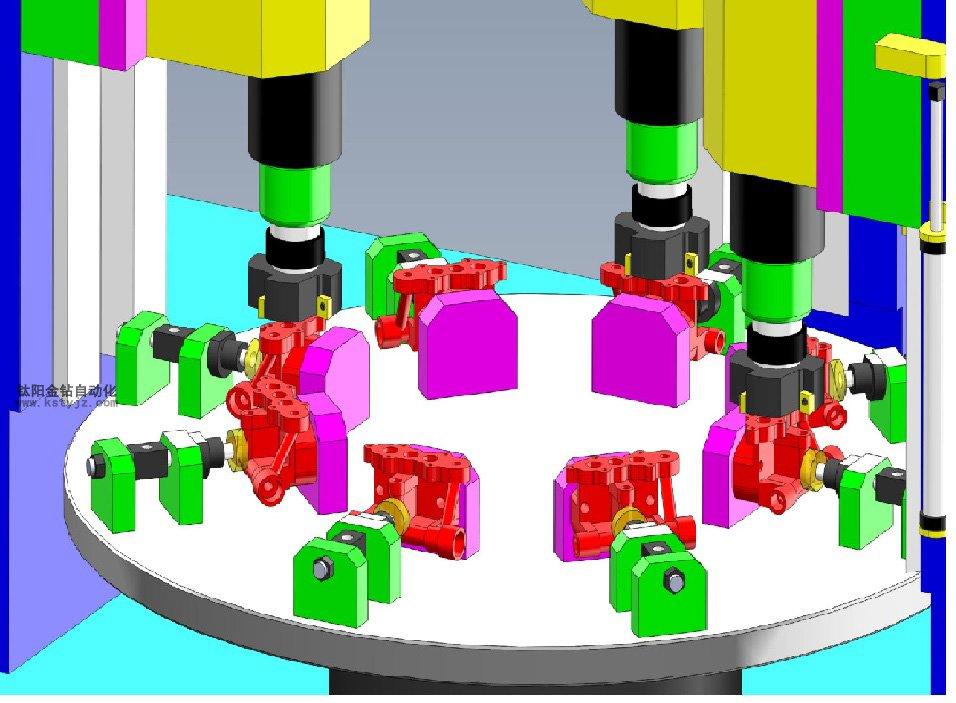

自動攻牙機的工作原理如何選擇自動攻牙機

什麼是攻牙機
攻牙機是把鑽好的通孔或盲孔金屬製件的孔內壁攻出內絲螺紋方便安裝緊固件或連接件的基礎機械加工設備， 攻牙機的加工方式有很多種加工的成品也分為很多種類，其技術要點和標準參數也非常之多。雖然是基礎的常用加工工序但在機械母機設備中是屬於精確度較高的種類，廣受業內人士重視。

攻牙機的原理與種類
根據驅動動力種類的不同，攻牙機可以分為手動攻牙機、氣動攻牙機、電動攻牙機和液壓攻牙機等；根據攻牙機主軸數目不同，可分為單軸攻牙機、二軸攻牙機四軸攻牙機、六軸攻牙機、多軸攻牙機等；根據加工零件種類不同，攻牙機又可分為模內攻牙機、萬能攻牙機、熱打螺母攻牙機、法蘭螺母攻牙機、圓螺母攻牙機、六角螺母攻牙機、盲孔螺母攻牙機、防盜螺母攻牙機等多種型號；根據攻牙機加工過程的自動化程度不同，攻牙機可分為全自動攻牙機、半自動攻牙機和手動攻牙機等；根據攻牙機攻牙時是否同時鑽孔，攻牙機又分鑽孔攻牙機、擴孔攻牙機等。
全自動攻牙機自動化程度最高，工作時，只要把零件毛坯放入料斗中即可自動進料，自動定位，自動夾緊，自動攻牙、自動卸料，一個工人可以同時操作多台設備，生產效率高，可顯著節約勞動力成本！
優質攻牙機具有設計新穎、結構合理、簡便易用、自動化程度高、使用方便、效率高、免維護、性價比極高等特點，優質的螺母攻牙機加工出的各種螺母螺紋光潔度高，成品合格率高。

自動攻牙機的工作方式
自動攻牙實現了速度快，精度高等優點，攻出來的螺母可通過牙規檢驗。機器性能穩定，操作簡易。
全自動攻牙機裝有供料單元（一般為振動盤）、傳感單元、鎖具單元、卸料單元等復合配件。全自動攻牙機整套系統上配有傳感器檢測，料件卡住或不進料，機器會自動停止。自動攻牙機高精度行程調整簡單，可作高速連續輪迴運轉、堅固耐用。主軸進退刀是依牙距自動精密配合，工作不會上浮。在加裝多軸單元後多能大大的提高生產效率。二重安全離合器裝置能防止絲攻之折損。操縱者的兩手可以自由的離開機械，即使是初學者也可以順利的操縱。
自動攻牙機A、B齒輪配合A、B轉軸與主軸依牙距推進完全配合，垂直不亂、精確、精密度特別高，攻牙時前進與撤退退卻不必出力就能運轉自如。而同時決定於優良的加工物品，不會造成粗細不同螺紋，針對薄板和輕合金屬，合成樹脂等軟質品也能攻出完美螺紋。同時還可以配置多軸器進行多軸同步加工，出產效率大大提高。
攻絲中常見問題以及對策
攻絲中常見問題及對策摘要：齒輪泵代替柱塞泵功能技術分析用牧野柔性製造技術加工ABS閥體鑄造模具行業發展現狀與趨勢線切割加工的工件的裝夾與調整立磨磨輥/盤瓦耐磨堆焊中的幾個問題線切割“花絲”現象分析與解決基於CAE技術的化工設備設計中國企業如何跨越國外技術壁壘C級精度軸承精品研製成功數控車削的工藝與工裝沖壓模具原理圖電火花燒蝕代替研磨金剛石薄膜塗層刀具干切削性能的試驗研究簡介發展生產力必須發展機床工業清理滾筒操作規程公差計算機輔助查找的研究軸承鋼的表面強化方法刀具技術的發展表現為四方面171/172數控切斷機床刀具的國產化研製臥式車床的結構簡介[標籤:tag]異常現象異常原因對策精度問題擴大絲錐選定不適當使用精度級數適合的絲錐增加切削錐的長度切屑堵塞應使用螺尖絲錐或螺旋絲錐減少絲錐容屑槽數，而擴大容屑槽的容積。使用細牙螺紋。底孔盡量加大。盲孔螺紋，底孔盡量加深。縮短攻牙長度。改用他種切削.
異常現象異常原因對策精度問題擴大絲錐選定不適當使用精度級數適合的絲錐增加切削錐的長度切屑堵塞應使用螺尖絲錐或螺旋絲錐減少絲錐容屑槽數，而擴大容屑槽的容積。使用細牙螺紋。底孔盡量加大。盲孔螺紋，底孔盡量加深。縮短攻牙長度。改用他種切削油及注油方式。使用條件不適當調整切削速度。防止螺絲攻與下孔偏心或傾斜。絲錐或刀柄由固定改用浮動式。進刀速度應適當而防止牙型變型。採取剛性攻絲適當選用攻絲機的加工能力。防止主軸振動。粘刀使用有表面氧化皮膜處理的絲錐改用抗粘結性較高的切削油。降低切削速度。改變切削角使適合被削材質。絲錐再研磨不適當容屑槽的分度應均一。切削角及吃入間隙角勿過大。刀刃背部勿過小。去除研磨毛邊。
縮小絲錐選定不適當使用加大絲錐。對被削材如屬銅合金、鋁合金、鑄鐵等攻牙時擴大率較少的。被削材如為管狀或薄板等容易反彈時。導錐角度要適當。加大切削角。內螺紋外傷回轉退出時，尤其是絲錐將離開內紋紋口處，速度應適當以免有損傷發生。內螺紋中有切屑殘留修磨絲錐，減少其狀切屑的留存。完全清除切屑後，才以量規檢查。
表面質量崩裂或咬痕切削錐長度不夠增加前部切削錐長度。切削角不適當切削角須配合工作材質。粘刀使用工作部分經鏟磨加工之絲錐。減少刃部厚度。使用經表面處理的絲錐。改變切削油種類及注油方式。降低切削速度。切屑堵塞應使用螺尖絲錐或螺旋槽絲錐。加大下孔徑。振波過於鋒利減少切削角度。減少鏟背量修磨不適當避免刃部厚度過小。避免修磨容屑槽底。耐用度折斷絲錐的選定不適當材質改用高速鋼防止鐵屑堵塞(或使用螺尖絲錐、螺旋槽絲錐、擠壓絲錐) 切削扭力過大底孔直徑盡量擴大。縮短攻牙長度。改用細牙螺紋。為了增加絲錐的鋒利性加大切削角。為了減少摩擦、扭力、螺紋部間隙角可以稍為加大，刃部厚度減少。使用螺旋槽絲攻。
使用條件不適當降低切削速度。防止絲錐與底孔偏心或傾斜。絲錐夾頭採用浮動式。攻絲刀柄改用可調整式。盲孔鑽底孔時防止絲錐碰到孔底。再研磨不適當不得研磨容屑槽避免刃厚過小。耗損部應磨掉。
昆山鈦陽金鑽自動化設備有限公司在精密工業發展的道路上願與您攜手，共同進步！路皎15250231221
相關資訊
- 自動攻牙機的工作原理如何選擇自動攻牙'>自動攻牙機的工作原理如何選擇自動攻牙
- 非標伺服自動攻牙機生產加工廠家'>非標伺服自動攻牙機生產加工廠家
- 攻牙機能夠使用的方法是什麼呢？'>攻牙機能夠使用的方法是什麼呢？
- 自動攻牙機沖床和沖孔機的對比'>自動攻牙機沖床和沖孔機的對比
- 解析自動攻牙機機床的發展方向'>解析自動攻牙機機床的發展方向
- 攻牙機和台鑽有什麼區別？'>攻牙機和台鑽有什麼區別？
- 全自動攻牙機如何分析螺紋加工的質量問'>全自動攻牙機如何分析螺紋加工的質量問
- 全自動攻牙機的十大功能特點'>全自動攻牙機的十大功能特點
- 手動攻牙機的性能特點'>手動攻牙機的性能特點
- 全自動玻璃攻牙機有那些特點？'>全自動玻璃攻牙機有那些特點？


推薦文章
- 自動攻牙機的工作原理
- 非標伺服自動攻牙機生
- 立式固定雙軸鑽孔攻牙
- 無錫鈦陽金鑽自動攻牙
- 自動攻牙機在加工時產
- 系統闡述多軸自動攻牙
- 多軸器的操作注意事項
- 昆山鈦陽金鑽精工機械
- 影響電動攻牙機性能的
- 何以自動攻牙機可以做